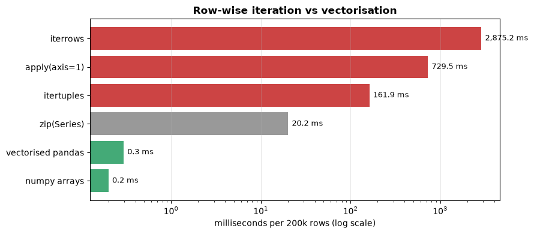

Performance & Memory — Technical Reference#
Every other notebook in this folder is a snippet reference you read. This one runs: the numbers below are measured on the machine that builds the book, not quoted from a blog post. Re-run it on your own hardware and the ratios will hold even though the absolute times will not.
Quick Index#
Question |
Section |
|---|---|
How much slower is |
§1 |
How do I shrink a DataFrame that will not fit in memory? |
§2 |
Why is my scalar lookup slow? |
§3 |
Why did my assignment not stick? (copy vs view) |
§4 |
How do I read a file bigger than RAM? |
§5 |
CSV or Parquet? |
§6 |
When should I stop using pandas? |
§7 |
How to measure#
Three tools, in order of how often you need them:
%timeit— repeated timing of a single expression, reports mean ± stddf.memory_usage(deep=True)— real memory including Python string objectsarr.nbytes— exact bytes for a NumPy array (no object indirection)
The rule for any performance claim: measure before and after on your own data. Row count, dtype mix, and cardinality change the answer completely.
import numpy as np
import pandas as pd
import time
import matplotlib.pyplot as plt
RNG = np.random.default_rng(0)
N = 200_000
df = pd.DataFrame({
"user_id": RNG.integers(0, 20_000, N),
"country": RNG.choice(["US", "UK", "DE", "FR", "JP"], N), # low cardinality
"channel": RNG.choice(["organic", "paid", "email", "referral"], N),
"revenue": RNG.gamma(2.0, 50.0, N).round(2),
"quantity": RNG.integers(1, 10, N),
"ts": pd.Timestamp("2024-01-01") + pd.to_timedelta(RNG.integers(0, 86_400 * 90, N), unit="s"),
})
print(f"{len(df):,} rows x {df.shape[1]} columns")
print(df.dtypes.to_string())
def bench(fn, n=3):
"""Median wall time over n runs, in milliseconds. %timeit is better for
micro-benchmarks; this is used so results render in the built book."""
ts = []
for _ in range(n):
t0 = time.perf_counter()
fn()
ts.append((time.perf_counter() - t0) * 1000)
return float(np.median(ts))
200,000 rows x 6 columns
user_id int64
country object
channel object
revenue float64
quantity int64
ts datetime64[ns]
§1 — Iteration vs Vectorisation#
The single most common pandas performance mistake is a row-wise apply. The
ladder below goes from slowest to fastest, computing the same column each time.
def v_iterrows():
out = []
for _, row in df.head(20_000).iterrows(): # 20k only -- it is that slow
out.append(row["revenue"] * row["quantity"])
return out
def v_itertuples():
return [r.revenue * r.quantity for r in df.head(20_000).itertuples()]
def v_apply_axis1():
return df.head(20_000).apply(lambda r: r["revenue"] * r["quantity"], axis=1)
def v_zip():
return [a * b for a, b in zip(df["revenue"], df["quantity"])]
def v_vectorised():
return df["revenue"] * df["quantity"]
def v_numpy():
return df["revenue"].to_numpy() * df["quantity"].to_numpy()
# First three run on 20k rows, last three on all 200k -- normalise to per-row.
results = [
("iterrows", bench(v_iterrows) / 20_000 * N),
("apply(axis=1)", bench(v_apply_axis1) / 20_000 * N),
("itertuples", bench(v_itertuples) / 20_000 * N),
("zip(Series)", bench(v_zip)),
("vectorised pandas", bench(v_vectorised)),
("numpy arrays", bench(v_numpy)),
]
base = results[-1][1]
print(f"{'method':22s} {'ms / 200k rows':>15s} {'vs numpy':>10s}")
for name, ms in results:
print(f"{name:22s} {ms:15.2f} {ms / base:9.0f}x")
method ms / 200k rows vs numpy
iterrows 2875.17 14349x
apply(axis=1) 729.50 3641x
itertuples 161.91 808x
zip(Series) 20.17 101x
vectorised pandas 0.30 1x
numpy arrays 0.20 1x
names = [r[0] for r in results]
times = [r[1] for r in results]
fig, ax = plt.subplots(figsize=(9, 4))
ax.barh(names, times, color=["#c44"] * 3 + ["#999"] + ["#4a7"] * 2)
ax.set_xscale("log")
ax.set_xlabel("milliseconds per 200k rows (log scale)")
ax.set_title("Row-wise iteration vs vectorisation", fontweight="bold")
ax.invert_yaxis()
for i, t in enumerate(times):
ax.text(t * 1.1, i, f"{t:,.1f} ms", va="center", fontsize=9)
ax.grid(axis="x", alpha=0.3)
plt.tight_layout()
plt.show()

What the ladder shows
iterrows is slowest because it constructs a Series for every row. apply(axis=1)
does the same thing with nicer syntax. itertuples avoids the Series construction
and is roughly an order of magnitude better. Plain zip over two Series beats all
of them. Vectorised pandas and raw NumPy are faster again, and the gap widens with
row count.
When apply is still the right call
The operation genuinely has no vectorised equivalent (parsing, an API call, ragged text)
The frame is small and clarity matters more than milliseconds
You are prototyping and will vectorise later
Common mistakes:
Using
apply(axis=1)on a frame with millions of rows and assuming pandas optimises it — it does not; it is a Python loopReaching for
np.vectorizeexpecting a speedup; it is a convenience wrapper around a loop, not a vectoriserGrowing a list inside
iterrowsand callingpd.concatper iteration, which is quadratic
§2 — Memory: dtypes are the biggest lever#
Before reaching for chunking or a different library, check the dtypes. Two
changes — category for low-cardinality strings and downcast numerics — routinely
cut a frame by more than half.
def mem_mb(d):
return d.memory_usage(deep=True).sum() / 1024**2 # deep=True counts str objects
before = mem_mb(df)
opt = df.copy()
opt["country"] = opt["country"].astype("category") # 5 distinct values
opt["channel"] = opt["channel"].astype("category") # 4 distinct values
opt["user_id"] = pd.to_numeric(opt["user_id"], downcast="unsigned")
opt["quantity"] = pd.to_numeric(opt["quantity"], downcast="unsigned")
opt["revenue"] = pd.to_numeric(opt["revenue"], downcast="float")
after = mem_mb(opt)
per_col = pd.DataFrame({
"before_MB": df.memory_usage(deep=True) / 1024**2,
"after_MB": opt.memory_usage(deep=True) / 1024**2,
}).assign(saved_pct=lambda d: (1 - d["after_MB"] / d["before_MB"]) * 100)
print(per_col.round(2).to_string())
print(f"\ntotal: {before:.1f} MB -> {after:.1f} MB ({(1 - after/before) * 100:.0f}% smaller)")
print(f"dtypes now: {dict(opt.dtypes.astype(str))}")
before_MB after_MB saved_pct
Index 0.00 0.00 0.00
user_id 1.53 0.38 75.00
country 11.25 0.19 98.30
channel 12.02 0.19 98.41
revenue 1.53 0.76 50.00
quantity 1.53 0.19 87.50
ts 1.53 1.53 0.00
total: 29.4 MB -> 3.2 MB (89% smaller)
dtypes now: {'user_id': 'uint16', 'country': 'category', 'channel': 'category', 'revenue': 'float32', 'quantity': 'uint8', 'ts': 'datetime64[ns]'}
# Where the dtype ceiling is -- pick the smallest type that fits your range.
rows = []
for dt in ["int8", "int16", "int32", "int64", "float32", "float64"]:
info = np.iinfo(dt) if dt.startswith("int") else np.finfo(dt)
rows.append({"dtype": dt, "bytes": np.dtype(dt).itemsize,
"min": f"{info.min:.3g}", "max": f"{info.max:.3g}"})
print(pd.DataFrame(rows).to_string(index=False))
# category stores integer codes + a lookup table, so its advantage shrinks as
# cardinality rises and reverses once nearly every value is distinct AND long.
print("\ncategory vs plain strings, 200k rows:")
for label, s in [
("5 distinct", pd.Series(RNG.integers(0, 5, N)).astype(str)),
("5,000 distinct", pd.Series(RNG.integers(0, 5_000, N)).astype(str)),
("100,000 distinct", pd.Series(RNG.integers(0, 100_000, N)).astype(str)),
("all unique, short", pd.Series(np.arange(N)).astype(str)),
("all unique, long (25ch)", pd.Series([f"user_{i}_{'x' * 18}" for i in range(N)])),
]:
o = s.memory_usage(deep=True) / 1024**2
c = s.astype("category").memory_usage(deep=True) / 1024**2
verdict = "category wins" if c < o else "category LOSES"
print(f" {label:24s}: plain {o:6.2f} MB | category {c:6.2f} MB -> {verdict}")
dtype bytes min max
int8 1 -128 127
int16 2 -3.28e+04 3.28e+04
int32 4 -2.15e+09 2.15e+09
int64 8 -9.22e+18 9.22e+18
float32 4 -3.4e+38 3.4e+38
float64 8 -1.8e+308 1.8e+308
category vs plain strings, 200k rows:
5 distinct : plain 11.06 MB | category 0.19 MB -> category wins
5,000 distinct : plain 11.59 MB | category 0.80 MB -> category wins
100,000 distinct : plain 11.80 MB | category 7.88 MB -> category wins
all unique, short : plain 11.91 MB | category 16.70 MB -> category LOSES
all unique, long (25ch) : plain 16.49 MB | category 21.28 MB -> category LOSES
Common mistakes:
memory_usage()withoutdeep=True— it reports the pointer array for object columns, not the strings themselves, and can understate by 10× or moreConverting a high-cardinality column to
category: once nearly every value is distinct, the codes plus the lookup table cost more than the raw stringsDowncasting an id column to
int8because today’s data fits — the range is a property of the domain, not of the current sampleAssuming
categoryspeeds up everything; it speeds up groupby and comparison, but string operations on categories can be slower
§3 — Access patterns#
Same value, six ways to fetch it. The spread here is modest — roughly 1.5× between
best and worst — which is itself the lesson: scalar-access micro-optimisation is
not where slow pandas code loses its time. §1 is. Reach for .at inside a loop,
but if you are in a loop at all, that is the thing worth fixing.
d = df.head(50_000).copy().reset_index(drop=True)
COL, ROW = "revenue", 25_000
access = [
(".at[row, col]", lambda: d.at[ROW, COL]),
(".iat[row, colpos]", lambda: d.iat[ROW, 3]),
(".loc[row, col]", lambda: d.loc[ROW, COL]),
(".iloc[row, colpos]", lambda: d.iloc[ROW, 3]),
("df[col][row]", lambda: d[COL][ROW]),
("values[row, colpos]", lambda: d[COL].to_numpy()[ROW]),
]
def rep(fn, n=2000):
t0 = time.perf_counter()
for _ in range(n):
fn()
return (time.perf_counter() - t0) / n * 1e6 # microseconds per call
acc = [(name, rep(fn)) for name, fn in access]
fast = min(a[1] for a in acc)
print(f"{'access':22s} {'us / call':>10s} {'vs fastest':>11s}")
for name, us in acc:
print(f"{name:22s} {us:10.2f} {us / fast:10.1f}x")
access us / call vs fastest
.at[row, col] 1.68 1.1x
.iat[row, colpos] 6.63 4.2x
.loc[row, col] 3.41 2.2x
.iloc[row, colpos] 8.43 5.4x
df[col][row] 1.87 1.2x
values[row, colpos] 1.57 1.0x
# Filtering: query() vs boolean mask vs isin, on 200k rows
filt = [
("boolean mask", lambda: df[(df["revenue"] > 100) & (df["quantity"] > 5)]),
("query()", lambda: df.query("revenue > 100 and quantity > 5")),
("numpy mask", lambda: df[(df["revenue"].to_numpy() > 100)
& (df["quantity"].to_numpy() > 5)]),
("isin (5 vals)", lambda: df[df["country"].isin(["US", "UK"])]),
]
print(f"{'filter':18s} {'ms':>8s}")
for name, fn in filt:
print(f"{name:18s} {bench(fn):8.2f}")
# groupby: category dtype vs object
g_obj = df.copy()
g_cat = df.copy()
g_cat["country"] = g_cat["country"].astype("category")
print(f"\ngroupby on object : {bench(lambda: g_obj.groupby('country')['revenue'].sum()):6.2f} ms")
print(f"groupby on category : {bench(lambda: g_cat.groupby('country', observed=True)['revenue'].sum()):6.2f} ms")
filter ms
boolean mask 2.41
query() 3.11
numpy mask 1.50
isin (5 vals) 5.09
groupby on object : 5.41 ms
groupby on category : 2.06 ms
Common mistakes:
Using
.locinside a loop for scalar reads —.atskips the alignment machinery, though the win is ~1.4×, not the order of magnitude often quotedAssuming
query()is always faster; it parses an expression string, so it wins on very large frames and loses on small ones. Its real advantage is readabilityForgetting
observed=Truewhen grouping acategory— pandas otherwise materialises every unused category combination, which can be catastrophic on multi-key groupbys
§4 — Copy vs view, and SettingWithCopyWarning#
This is a correctness issue that masquerades as a performance topic: the “optimisation” of avoiding a copy is what makes assignments silently fail.
base = df.head(1_000).copy()
# ── The trap: chained indexing ──────────────────────────────────────────────
subset = base[base["revenue"] > 100] # a NEW object (a copy)
subset["flag"] = 1 # may warn: writing to a copy
print("did the write reach the parent?", "flag" in base.columns) # False
# ── The fix: one .loc call, no chaining ─────────────────────────────────────
base.loc[base["revenue"] > 100, "flag"] = 1
print("after .loc, parent has flag:", "flag" in base.columns) # True
# ── Being explicit when you DO want an independent frame ────────────────────
subset = base[base["revenue"] > 100].copy()
subset["flag"] = 2 # unambiguous, no warning
print("parent unchanged:", base.loc[base['revenue'] > 100, 'flag'].iloc[0])
# ── NumPy makes the same distinction, but visibly ───────────────────────────
a = np.arange(10)
v = a[2:5] # slice -> VIEW
c = a[[2, 3, 4]] # fancy -> COPY
v[0], c[0] = 99, 77
print(f"\nafter writing to a view : a[2] = {a[2]} (changed)")
print(f"after writing to a copy: a[3] = {a[3]} (unchanged)")
print("v.base is a:", v.base is a, "| c.base is None:", c.base is None)
did the write reach the parent? False
after .loc, parent has flag: True
parent unchanged: 1.0
after writing to a view : a[2] = 99 (changed)
after writing to a copy: a[3] = 3 (unchanged)
v.base is a: True | c.base is None: True
/tmp/ipykernel_3431/3187392173.py:5: SettingWithCopyWarning:
A value is trying to be set on a copy of a slice from a DataFrame.
Try using .loc[row_indexer,col_indexer] = value instead
See the caveats in the documentation: https://pandas.pydata.org/pandas-docs/stable/user_guide/indexing.html#returning-a-view-versus-a-copy
subset["flag"] = 1 # may warn: writing to a copy
Copy or view?
Operation |
Result |
Writes reach the parent? |
|---|---|---|
|
view |
✅ yes |
|
copy |
❌ no |
|
copy |
❌ no |
|
copy |
❌ no |
|
in place |
✅ yes |
Common mistakes:
Chained assignment
df[mask]['col'] = x, which writes to a temporarySuppressing
SettingWithCopyWarninginstead of fixing it — it is usually rightAssuming
.copy()is deep for object columns; it copies the container, not the Python objects inside itRelying on the warning to catch every case; it is a heuristic and misses some. Pandas 3.0’s copy-on-write makes the semantics consistent, which is another reason to write
.locassignments rather than chained ones
§5 — Reading data that does not fit in memory#
Three levers, cheapest first: read fewer columns, read smaller dtypes, read in chunks. Most “I need Spark” problems are solved by the first two.
import tempfile, os
tmp = tempfile.mkdtemp()
csv_path = os.path.join(tmp, "sample.csv")
df.to_csv(csv_path, index=False)
print(f"CSV on disk: {os.path.getsize(csv_path) / 1024**2:.1f} MB")
# 1. usecols -- never read columns you will not use
sub = pd.read_csv(csv_path, usecols=["user_id", "revenue"])
print(f"usecols (2 of 6 cols): {mem_mb(sub):.1f} MB in memory")
# 2. dtype= -- declare types up front instead of letting pandas infer wide ones
typed = pd.read_csv(csv_path, dtype={"country": "category", "channel": "category",
"quantity": "uint8"})
print(f"with dtype= declared : {mem_mb(typed):.1f} MB")
print(f"naive read_csv : {mem_mb(pd.read_csv(csv_path)):.1f} MB")
# 3. chunksize -- stream and aggregate, never holding the whole file
total, rows = 0.0, 0
for chunk in pd.read_csv(csv_path, chunksize=50_000, usecols=["revenue"]):
total += chunk["revenue"].sum()
rows += len(chunk)
print(f"\nstreamed {rows:,} rows in chunks | total revenue = {total:,.0f}")
print(f"one-shot check : {df['revenue'].sum():,.0f}")
CSV on disk: 8.3 MB
usecols (2 of 6 cols): 3.1 MB in memory
with dtype= declared : 18.1 MB
naive read_csv : 42.3 MB
streamed 200,000 rows in chunks | total revenue = 20,028,642
one-shot check : 20,028,642
§6 — CSV vs Parquet#
CSV is text: every number is re-parsed on read, dtypes are guessed, and nothing is compressed. Parquet is columnar and typed, so it round-trips exactly and lets you read individual columns off disk.
pq_ok = True
try:
pq_path = os.path.join(tmp, "sample.parquet")
df.to_parquet(pq_path, index=False)
except Exception as e: # pyarrow/fastparquet not installed
pq_ok = False
print(f"Parquet unavailable in this environment ({type(e).__name__}); "
f"showing CSV numbers only.")
print(f"{'format':26s} {'disk MB':>9s} {'write ms':>10s} {'read ms':>9s}")
print(f"{'CSV':26s} {os.path.getsize(csv_path)/1024**2:9.1f} "
f"{bench(lambda: df.to_csv(csv_path, index=False), 1):10.0f} "
f"{bench(lambda: pd.read_csv(csv_path), 1):9.0f}")
if pq_ok:
print(f"{'Parquet (snappy)':26s} {os.path.getsize(pq_path)/1024**2:9.1f} "
f"{bench(lambda: df.to_parquet(pq_path, index=False), 1):10.0f} "
f"{bench(lambda: pd.read_parquet(pq_path), 1):9.0f}")
print(f"{'Parquet, 2 columns':26s} {'--':>9s} {'--':>10s} "
f"{bench(lambda: pd.read_parquet(pq_path, columns=['user_id','revenue']), 1):9.0f}")
# dtypes survive a Parquet round-trip; CSV loses them
rt_csv = pd.read_csv(csv_path)
rt_pq = pd.read_parquet(pq_path)
print(f"\nts dtype after CSV round-trip : {rt_csv['ts'].dtype}")
print(f"ts dtype after Parquet round-trip: {rt_pq['ts'].dtype}")
format disk MB write ms read ms
CSV 8.3 400 106
Parquet (snappy) 2.9 47 18
Parquet, 2 columns -- -- 3
ts dtype after CSV round-trip : object
ts dtype after Parquet round-trip: datetime64[ns]
Choosing a format:
CSV |
Parquet |
|
|---|---|---|
Human readable |
✅ |
❌ |
Preserves dtypes |
❌ (all text) |
✅ |
Compressed |
❌ |
✅ |
Read one column only |
❌ |
✅ |
Universal tool support |
✅ |
mostly |
Common mistakes:
Storing datetimes in CSV and re-parsing them on every read; Parquet keeps the dtype
Writing CSV with the index by accident —
index=Falseunless you mean itUsing Parquet for a file a human needs to open in a spreadsheet
§7 — When to leave pandas#
An honest answer to “how would you scale this?” is more useful than a rehearsed “use Spark”. The ladder, cheapest first:
Fix dtypes (§2) — often a 2–4× reduction for one line of code
Read less (§5) —
usecols,dtype=, Parquet column pruningChunk and aggregate (§5) — works whenever the operation is associative
Change library — below
Distribute — Spark or Dask, last, because it adds real operational cost
Tool |
Good at |
Trade-off |
|---|---|---|
pandas |
anything up to ~1–5 GB in RAM |
single-threaded, memory-hungry |
polars |
multi-core, lazy queries, 5–10× faster on groupby/join |
different API to learn |
DuckDB |
SQL over Parquet/CSV, larger-than-memory, zero setup |
SQL rather than DataFrame idioms |
Dask |
pandas API across cores or machines |
overhead; slower than pandas when data fits |
Spark |
genuinely distributed, TB scale |
heavy ops burden, slow for small data |
# DuckDB: SQL directly against a Parquet file, no load step
import duckdb
duckdb.sql("SELECT country, sum(revenue) FROM 'sample.parquet' GROUP BY 1").df()
# polars: lazy scan, predicate pushdown, multi-threaded
import polars as pl
(pl.scan_parquet("sample.parquet")
.filter(pl.col("revenue") > 100)
.group_by("country").agg(pl.col("revenue").sum())
.collect())
The interview answer. “It depends on where the bottleneck is.” If the frame fits after a dtype pass, stay in pandas. If it fits on disk but not in RAM, DuckDB or polars’ lazy scan. Only reach for a cluster when a single machine genuinely cannot hold the working set — distributing a 4 GB job usually makes it slower.
Interview Q&A#
Q: This pandas job takes 40 minutes. How do you speed it up?
A: Profile before changing anything — the bottleneck is usually one step, not the
whole pipeline. In practice it is a row-wise apply, a merge on an unindexed
column, or a groupby over object dtype. I’d time each stage, then work the ladder:
vectorise the hot loop, fix dtypes, and only then consider a different library.
Q: Why is apply(axis=1) slow when apply on a column is fine?
A: Column-wise apply calls the function once per column; row-wise calls it once
per row and constructs a Series each time. On a million rows that is a million
Python objects. The fix is almost always a vectorised expression or np.select
for conditional logic.
Q: A frame does not fit in memory. What now?
A: Cheapest first. Check dtypes — category on low-cardinality strings and
downcast numerics often halve it. Then read only the columns needed, ideally from
Parquet. Then chunk, if the aggregation is associative. Only after those would I
change tools, and I’d reach for DuckDB or polars before a cluster.
Q: When is category a bad idea?
A: At high cardinality. It stores integer codes plus a lookup table, so once most
values are distinct it costs more than the raw strings. The measurement in §2
shows the crossover directly.
Q: You assigned to a filtered frame and the original did not change.
A: Chained indexing. df[mask]['col'] = x produces a temporary copy and writes to
that. The fix is a single .loc call: df.loc[mask, 'col'] = x. If an
independent frame is what I actually wanted, .copy() makes it explicit.
Q: Which is faster, .loc or .at?
A: .at for a single scalar, but measure before optimising for it — §3 puts the
gap at roughly 1.3–1.5×, not the order of magnitude often claimed. Both are around
10 µs, so the difference only matters inside a loop running tens of thousands of
times, and at that point the real fix is to stop looping and vectorise.
Gotchas#
Benchmarks on 1k rows do not predict 10M rows; complexity differences only appear at scale
%timeitcaches: a second run may hit warm memory and look faster than realitymemory_usage()withoutdeep=Truebadly understates object columnsinplace=Trueusually still copies internally — it saves a name, not memoryRepeated
pd.concatin a loop is quadratic; collect into a list and concat once